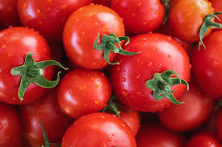
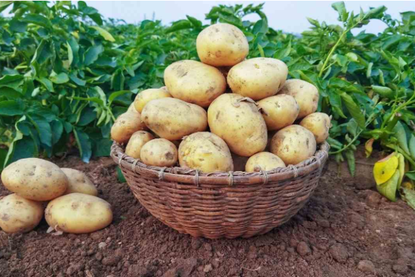

Tomato
A popular vegetable in salads and sauces.

Potato
Staple vegetable known for its versatility.

Carrot
Rich in vitamin A, commonly used in salads.
A popular vegetable in salads and sauces.
Staple vegetable known for its versatility.
Rich in vitamin A, commonly used in salads.